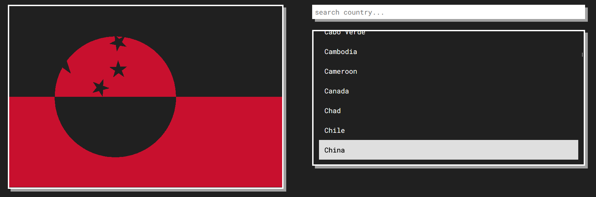

A random flag of a country/territory will be selected, and your goal is to figure out what is the mystery flag in the least amount of guesses/time as possible.
Each incorrect guesses will show some clues about the correct flag, more specifically, sections of both the correct flag and the guessed flag that have the same color.
For example: In the image below, the player have guessed "China", and while it isn't the correct answer, it has shown the clues to the correct flag (which is Greenland)
And that's all, have fun!
Default: The whole section of the correct flag will be checked with the guessed flag.
(Disputed/Special Territory/Countries include: Kosovo, Western Sahara, Taiwan and Antarctica)
(Sources from Wikipedia, last updated: Nov 2023)
Time Elapsed: $_time seconds
Tries: $_tries
The mystery country/territory was $_countries
Congrat! The mystery country/territory was $_countries